← 返回阅读库 · 原论文目录
论文讲解阅读文档 · 新模型 · v075
SlowFast Networks for Video Recognition[1812.03982]
视频时长 00:09:34；讲解文字 4,374 字符；提取讲解画面 23 张。按视频原顺序阅读，每段文字保留时间戳。
文字来自整段视频的自动语音转写，按自然停顿分段，并与 PPT / 论文页面 / 演示画面对齐。未将讲解压缩为摘要；术语、数字和口述公式请结合画面及原论文核对。 阅读稿已校正规范部分明确术语误识别；原始逐字稿和每处修改记录另行保留。
讲解画面为源视频截图（640×360），不是可编辑 PPT 文件。全片按每秒 2 帧扫描内容变化，逐步展开页保留；连续动画保留代表画面。清晰度受源视频限制。
下载完整资料包 · 含离线 HTML、PDF、Word、全部 PPT 画面和字幕。
原论文与材料
SlowFast Networks for Video Recognition · 下载完整 PDF（10 页）
按时间阅读
00:00:00–00:00:22 · 画面 001
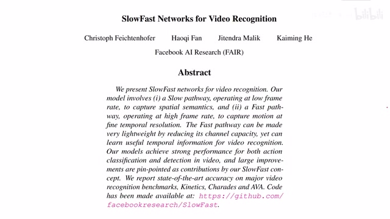
00:00:00–00:00:22 · 画面 001大家好，今天我们来介绍 Slow Fast Networks for Video Recognition 这篇短文，提出了一种通用的做视频识别的框架。简单来说，就是我们维护两个 Path，一个 Path 以较低的频率去处理视频的语义的信息，另一个 Path 以较高的频率去处理视频中的运动信息。那么最后再把这两个信息合并起来做后面的分类。
00:00:22–00:00:34 · 画面 002
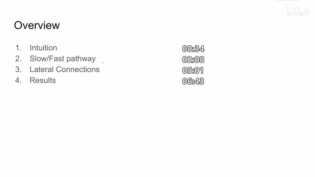
00:00:22–00:00:34 · 画面 002那么在今天的视频中，我们首先介绍一下这两个 pass 它的设计的逻辑，然后就是怎么样把这两个 pass 里面的信息给它融合起来，最后是作者汇报的结果。那么正如我们一开始所提到的，本文认为像空间上的语义信息，它的变化是相对较慢的。比如说你在视频里面看见车从一头开到另一头，车的形状基本不怎么变，你只要在里面有一帧的识别出它是一个车来，基本问题就不大了。
00:00:34–00:01:02 · 画面 003
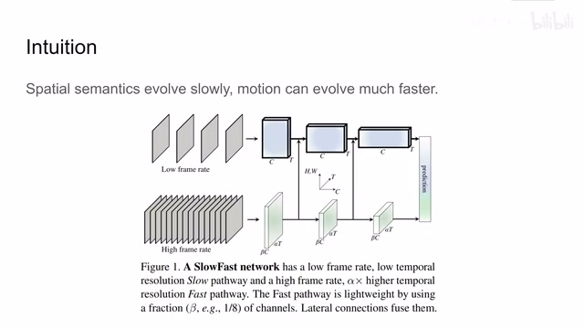
00:00:34–00:01:02 · 画面 003但是呢，视频里面这些物体呢，它是每时每刻都在运动的，这个运动呢，就需要你用很高的这个帧率去处理的。那么在这个逻辑上呢，我们看到作者提出了这样一个 framework，就是我一段视频进来呢，我以较低的帧率去做一个很庞大很深的一个网络，让它呢去提取里面的语义的特征，而另一部分网络呢用来处理这些高帧率的视频。
00:01:02–00:01:14 · 画面 004
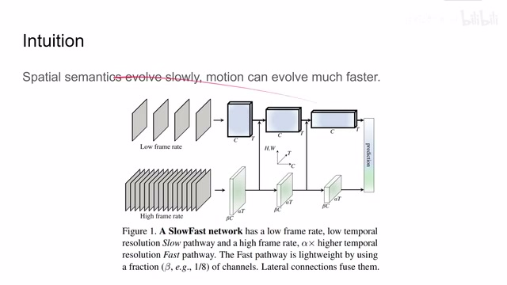
00:01:02–00:01:14 · 画面 00400:01:14–00:01:57 · 画面 005
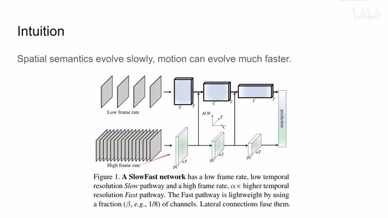
00:01:14–00:01:57 · 画面 005在这个网络呢，可能不是很深，我的每个 channel 呢不会很多，但是呢，我是一个很高的频率去处理这个视频，这样呢，尽量尝试去求解这个视频中的运动相关的信息。那么这个图呢，我们继续来看这一个坐标，它的向上的这个轴呢，代表着这个图像的宽和高。那么因为看到每个阶段里面我们都需要把两个 path 做一下融合，就是这个箭头，所以呢，这两个 path 它产生的宽和高都是一样的，你可以看到这个边就是它们的宽和高是一样的。
但是呢对于这个慢速的网络来说它有更大的 channel 的数量这个比例呢成了 beta 但是呢它的采样的间隔很长就是在时间的这个轴上呢它是 t 那么经过几层融合之后呢最后呢我们把所有的 feature 都融合到一起然后再去做后续的分类任务就可以了那么下面我们就以 resnet50 这样一个 backbone 呢来看这两个网络具体的配置那么首先是这个 slow pathway
00:01:57–00:02:07 · 画面 006
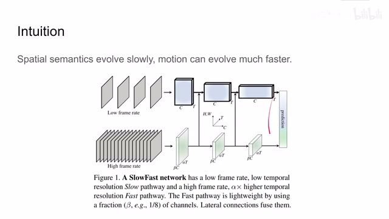
00:01:57–00:02:07 · 画面 00600:02:07–00:03:49 · 画面 007
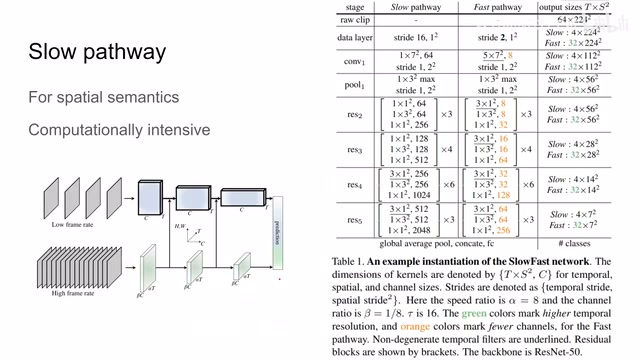
00:02:07–00:03:49 · 画面 007这个 passway 呢正如我们之前所说的是负责解析空间上的语义信息的那我们看到呢我们原始的视频输入进来它是一个 224x224 的图像它一共呢有 64 帧我们按照 16 帧的间隔呢去踩这个图像送到我们这个 slowpassway 里面这个 stride 呢第一个数呢表示在时间轴上第二个数呢表示宽和高上面那么再往下看我们过了一个卷积层这个卷积层它的 kernel 呢在时间轴上是 1,证明它是一个 2D 的卷积，然后它是一个 7x7 的 Kernel，它输出有 64 个 Channel，这个是它在时间轴还有空间上的 Stride。那么随后我们做了 Max Pooling，然后加上 ResNet 的模块，这里我们看到这每个模块里面它的 Kernel 的 Layer 都是 2D 的 Kernel，它在时间轴上的尺寸都是 1，而且随着网络层数的增加，我们看到它的 Channel 的数量在逐渐的变深，就像图里中演示的一样。
那么在后面几层，你可以看到这里标下滑线的位置，它是跟我们之前的几层有一点输入，它在时间轴上我们的 kernel size 不是 1 了，说明我们正在做一个 3D 的 convolution。这个时候我的 slower network 也在考虑时间这个轴上，它们各个帧之间相互关联的信息。那么这个是我们的 slower path，作者这里还说我们一开始并没有做时间轴上，我们一开始只做 2D 的 convolution，那么后面变到 3D。
因为它在实际的实验中发现呢，这个 Time Domain 呢，实在是水太深了，前面的几层浅层的 Convolution Network 呢，它把握不住，所以呢，在这个 Slow Pathway 里面呢，我们只在最后的几层加上这个 CVD 的 Convolution，那我们再看这个 Fast Pathway，那么这里呢，我们可以看到从原始视频来看，它在时间轴上的 stride 呢是 2，说明呢，它是每两帧就取一帧送到我们的 Fast Pathway 里面，这样呢，这条路径呢，就是以一个非常高频的速度来处理我们图像中的运动
00:03:49–00:04:37 · 画面 008
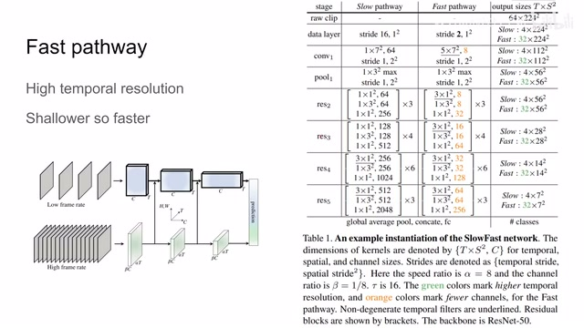
00:03:49–00:04:37 · 画面 008那么对比右边的输出呢，你可以看到，slow network 呢，它在 64 帧的数项中，它只输出了 4 帧，那 fast network 呢，直接输出 32 帧，那么再往下呢，跟 slow 一样也是做 convolution，那么这边 spatial 的 kernel 呢，和包括的 stride 的 padding 呢都是一样的，这样子呢，能够保证这两个 passway 它们产生的这个 feature 它们在空间的尺度上是一样的，方便我们呢，直接做串接，而在时间尺度上呢，我们这个 fast pathway 呢
直接就上来开始做 3D 的 convolution，因为它就是要捕捉这个视频中的运动信息，那么它最好及早开始就捕捉我们的各个视频帧之间的相互的关系，那么你可以看到，对比我们的 Slow Pathway，它的 Channel 的数量要薄很多，这样能保证我们这个 Fast Pathway 能以一个较高的速度来运行，那么这个就是我们的 Fast Pathway，那么现在我们有了两个 Pathway 之后，我们就要考虑该怎么样把它融合起来了
00:04:37–00:04:39 · 画面 009
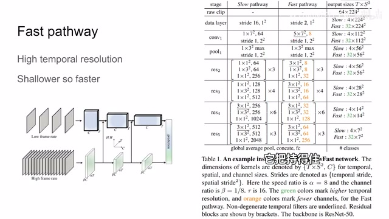
00:04:37–00:04:39 · 画面 00900:04:39–00:04:55 · 画面 010
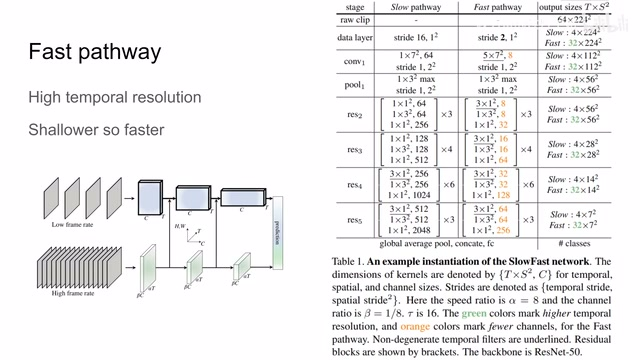
00:04:39–00:04:55 · 画面 01000:04:55–00:04:56 · 画面 011
00:04:55–00:04:56 · 画面 01100:04:56–00:05:01 · 画面 012
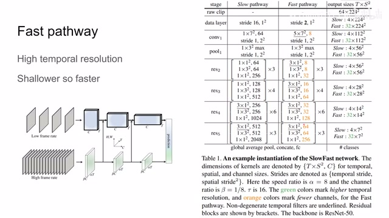
00:04:56–00:05:01 · 画面 01200:05:01–00:05:55 · 画面 013
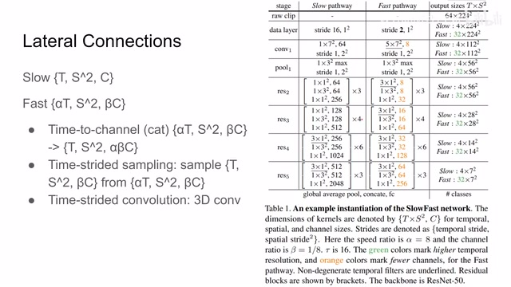
00:05:01–00:05:55 · 画面 013这里作者讨论几种 Lateral Connections，假如说我们的 Slow Network 它的输出是一个 T,S2C 这样的一个 Tensor，我们的 Fast Network 输入的是αT,S2 和βC 这样的一个 Tensor，那么我怎么把它串接起来呢？那么这里作者讨论了三种把它们串接起来的方法，首先就是直接做 Reshape，相当于我直接把时间轴上这些 Tensor 给它串接起来，这样子就是把这个α从这个 Time 这里拿到这个 Channel 里面这是一种非常简单的变形，它跑下来是最快的，然后一种是做 time-strided sampling，也就是说，我这里虽然有 alpha t 时刻的这些 feature，那我只取一个 t，这样子它肯定丢失了很多信息，那么第三种是 time-strided convolution，我们两个 tensor 的尺寸不一样，遇事不决的做这个 cd 的 convolution，那么这样就可以很轻松的把我们一个尺寸的 tensor 变换到另一个尺寸，那么这里再额外讲一下关于这个连接的方式，作者也在文章中测试了
00:05:55–00:06:09 · 画面 014
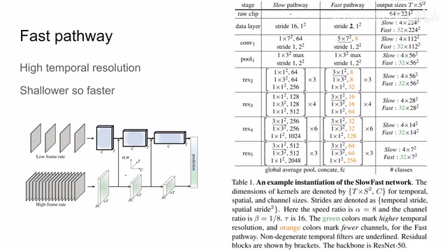
00:05:55–00:06:09 · 画面 014他发现呢，你无论是做双键筒还是做单键筒呢，它们的区别呢都不是特别的明显，所以呢，为了简单呢，我们这里只做个单键筒就可以了，那么以上呢，就是这篇论文提出的 Slow Fast 的这个框架，这里的 backbone 呢是 ResNet50，你当然可以把它换成其他结构的 CNN，它的核心的思想呢就是不同的网络去处理不同帧率的视频，然后在这些网络中呢，它们的目标想要解除的东西是不一样的，这个 intuition 呢，其实跟我们比如说视频的编码 H264 啊，这种有 KGN 这种
00:06:09–00:06:10 · 画面 015
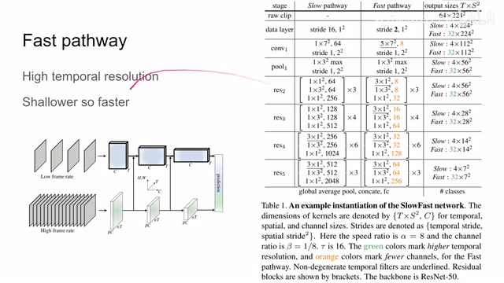
00:06:09–00:06:10 · 画面 01500:06:10–00:06:43 · 画面 016
00:06:10–00:06:43 · 画面 016编码的其实是有异曲同工之妙，那么你当然也可以把里面的 CNN 呢换成 Transformer，但是我们之前一篇论文里面介绍过了，好像换成 Transformer 之后呢，并没有说对这个框架提升有太多好的，我们之前介绍完了网络的结构，我们看作者汇报实验结果，这里呢，是我们经典的 Kinetics，还有这里呢，是三个经典的动作识别的数据集，那肯定是本文的方法 outperform 之前的这些方法对吧，一些好的数字
00:06:43–00:06:52 · 画面 017
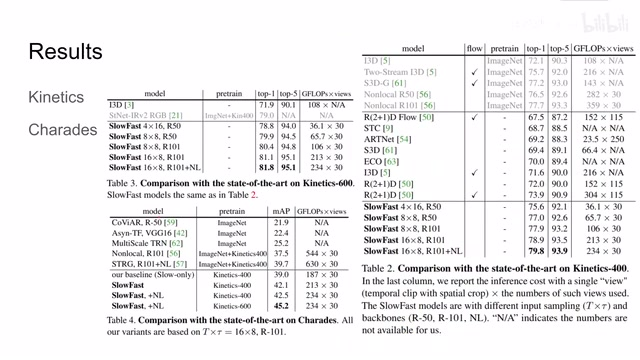
00:06:43–00:06:52 · 画面 01700:06:52–00:06:53 · 画面 018
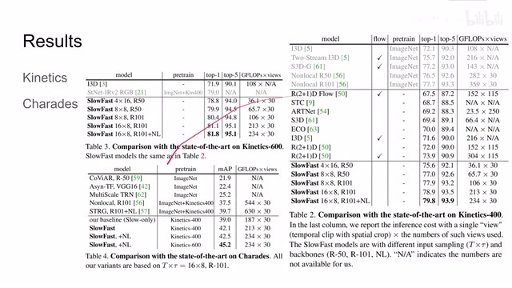
00:06:52–00:06:53 · 画面 01800:06:53–00:07:00 · 画面 019
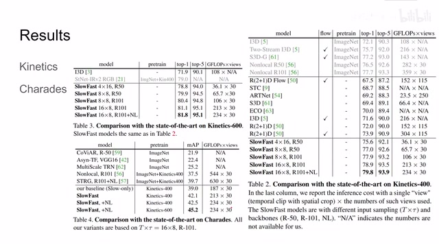
00:06:53–00:07:00 · 画面 019那么重点呢，其实我们更关注这个 ablation，也就是说，我们应该怎样设计去提高性能呢，这里呢，作者测试的是只有 slow network，那对比这个 slow fast，可以看到呢，通过增加这个 fast pathway 呢，我们的准确率呢得到了很大的提高，但是呢，因为 fast pathway 呢，它是一个非常浅的网络，所以网络的运算量呢并没有提升很多，这里你可以看到，从这个 slow only 到 slow fast 它的性能的提升还有运算量的提升，那么这一组呢，其实是非常有意思的
00:07:00–00:07:45 · 画面 020
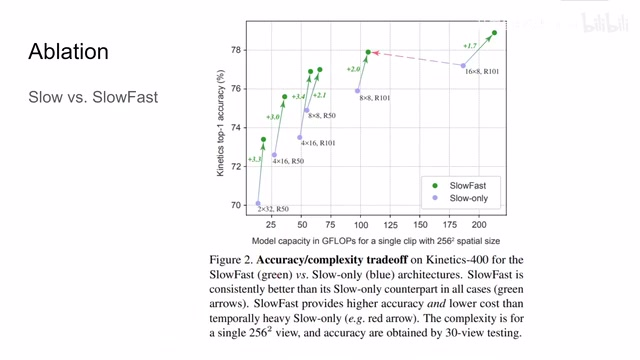
00:07:00–00:07:45 · 画面 020假如说我把 slow network 它处理的视频的帧率呢提高一倍，那么计算量变为原来的两倍，但是呢它的表现呢依然不如这个 slow fast。这也证明说我们确实需要一个网络来去捕捉这个高帧率的运动的信息。那么再看下面这组实验，这里呢作者实验了不同的把 slow 和 fast 的 network 这两个 passway 呢给它串接起来的方法，包括只使用两个单独的网络，没有连接。
00:07:45–00:08:59 · 画面 021
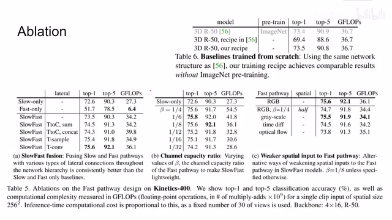
00:07:45–00:08:59 · 画面 021把它们相加，串接，采样，还有过一个 convolution。那肯定是 convolution 它的性能是最为强大的。作者里呢作者还测试了不同的 beta 值，也就是 fast pathway 它的 channel 的数量相对于 slow pathway 它 channel 数量的比例。这里呢作者默认的是八分之一，它的效果呢是最好的。那这边呢作者尝试了说既然我们的 fast pathway 呢我们重要的是让它捕捉运动信息，那我是不是也不用说处理 RGB 图像了。
我给它比如说像光流啊，灰度图啊，甚至把它的图像呢缩小一倍，会产生什么样的影响呢？之前我们看到当然你是把所有的信息这个 RGB 图像弄进去呢效果是最好的。但是呢你如果使用灰度图像，它的性能损失并不是很大，而需要的计算量呢下降。那最后呢这里作者尝试了这个 Train from scratch，也就是说我不做 Pretrain 了，我直接拿过这个视频的数据集来直接做训练。那么可以看到呢本文的方法呢跟 Pretrain 过的这个 model 呢。
他们的性能呢是可以相互比肩的。那么除此之外呢作者还汇报了像这个 AVA action detection 这些结果。那么如果你感兴趣的话可以去论文中查看。那么总的来说呢本文提出一种 fast pathway 加 slow pathway 用来做视频理解的这么一个框架，它设计的意图呢就是在于让这个 slow network 去做这个 semantics，用这个 fast network 呢去捕捉里面的 motion 这些运动。你当然也可以把它理解为这是一种 time domain 上面的金字塔。
00:08:59–00:09:33 · 画面 022
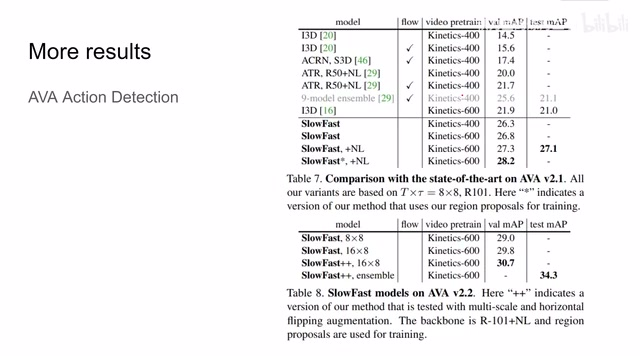
00:08:59–00:09:33 · 画面 022那么还是非常推荐感兴趣的朋友去原文查看好的。那么以上就是我对这篇论文的简单分析，感谢您的收看，再见。
00:09:33–00:09:34 · 画面 023
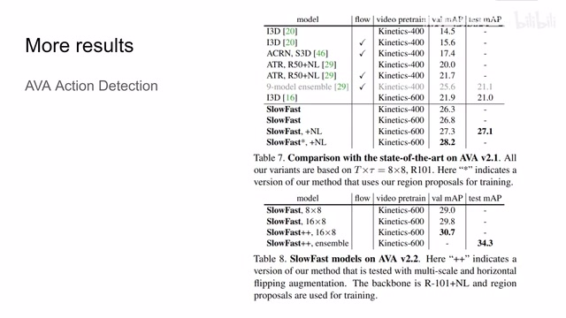
00:09:33–00:09:34 · 画面 023转写与来源说明 · 0 个自动复核提示
保留 21 个原始语音片段，0 个片段触发自动复核提示。提示仅用于定位可能的术语、重复或识别问题，不等于已确认错误。
讲解画面为源视频截图（640×360），不是可编辑 PPT 文件。全片按每秒 2 帧扫描内容变化，逐步展开页保留；连续动画保留代表画面。清晰度受源视频限制。
原视频：paper/合集_2026-10-16_新模型/[论文简析]SlowFast Networks for Video Recognition[1812.03982].mp4
SHA-256：66644d953e6307a2ec47846290dead0808ae01ee99b0a8454de83386dac8558d
全文按视频语音与画面制作。原论文可从上方链接下载；完整资料包保留全文、原始逐字稿、字幕和校对记录。